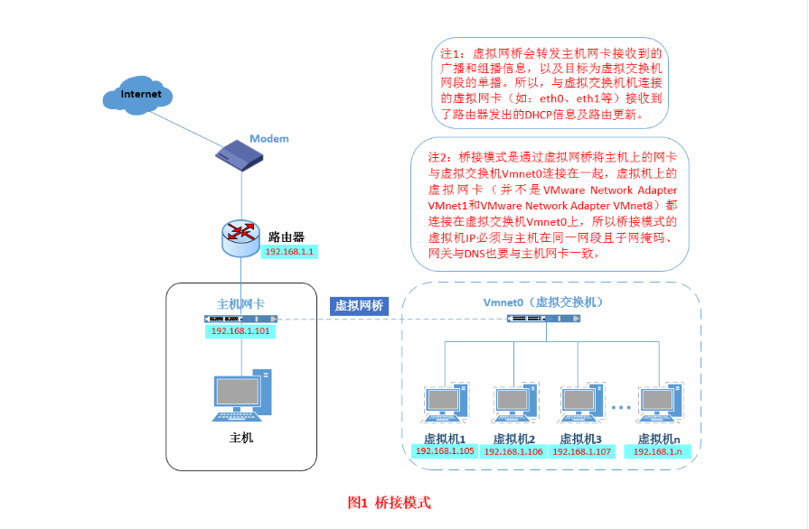
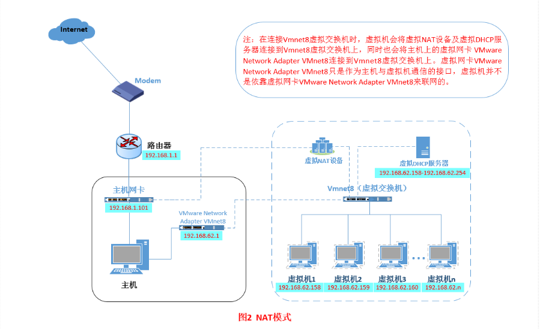
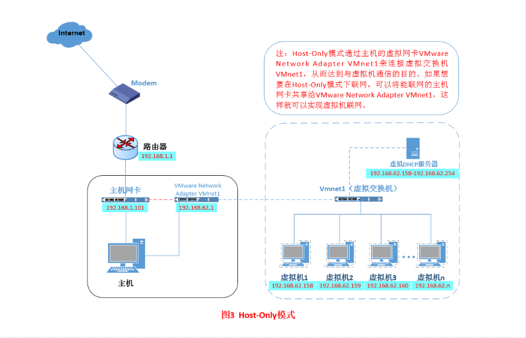

VMWare Tools安装
- VMWare Tools安装:
- windows系统上安装:
- 虚拟机---安装VMwareTools
- 会自动弹出一个安装界面，如果没有弹出，打开我的电脑---虚拟光驱---setup安装即可
- 安装选择默认回车就可以，安装完重启
外网与内网的区别：
外网实际上是从 Internet 服务提供商（ISP）分配的IPv4地址块。当公司或组织要建立一个基于 IP 的网络连接到 Internet时，它们的 ISP 会给他们分配一个地址块。每个地址块有固定的前缀。例如ISP分配给某公司的地址块为199.34.76.64/28，由于这个块固定了前28位，所以称为/28。/28指定了IP地址前28位，留出了4位表示总共是2的4次幂也就是16个本地IP地址可以使用，不过所有块中最低地址用于标识网络本身，最高地址是这个网络的一个广播地址，所以比你原来预计的要少两个地址。由于IP地址越来越稀少，如今大多数网络都使用网络地址转换（Network Address Translation , NAT)。大家中目前使用的路由就有NAT的功能，基于NAT网络，大多数节点只有不可路由的本地地址，这些地址也就是我们所说的私有地址也就是我们说的内网。
IP：实际上有两种一种IPv6和IPv4我们常用的是IPv4是32位的长度，IPv6使用128位地址，正因为IPv4的长度有限所以无法保证全球每个人一个ip地址，所以才需要NAT来进行转换，我们使用的是内网，是路由器LAN口分配的，当我们要请求数据的时候会将数据传送到路由器，路由器传递到WAN口给运营商（联通、移动、电信），然后运营商哪里使用才是外网，可以访问Internet网络请求数据，然后在通过路由器把请求到的信息返还给我们。
私有IP地址网段为： A类：10.0.0.0——10.255.255.255 B类：172.16.0.0——172.31.255.255 C类：192.168.0.0——192.168.255.255
外网IP地址网段为： A类：1.0.0.0——126.0.0.0 子网255.0.0.0 第一位必须是0 B类：128.1.0.0——191.255.255 子网255.255.0.0 前两位必须是10 C类：192.0.1.0——223.255.255.255 子网255.255.255.0 前三位必须是110
Vmware虚拟机三种网络模式：
vmware为我们提供了三种网络工作模式，它们分别是：Bridged（桥接模式）、NAT（网络地址转换模式）、Host-Only（仅主机模式）。
- Bridged（桥接模式）： 什么是桥接模式？桥接模式就是将主机网卡与虚拟机虚拟的网卡利用虚拟网桥进行通信。在桥接的作用下，类似于把物理主机虚拟为一个交换机，所有桥接设置的虚拟机连接到这个交换机的一个接口上，物理主机也同样插在这个交换机当中，所以所有桥接下的网卡与网卡都是交换模式的，相互可以访问而不干扰。在桥接模式下，虚拟机ip地址需要与主机在同一个网段，如果需要联网，则网关与DNS需要与主机网卡一致。其网络结构如下图所示： 
NAT（地址转换模式）： 刚刚我们说到，如果你的网络ip资源紧缺，但是你又希望你的虚拟机能够联网，这时候NAT模式是最好的选择。NAT模式借助虚拟NAT设备和虚拟DHCP服务器，使得虚拟机可以联网。其网络结构如下图所示： 
Host-Only（仅主机模式）： Host-Only模式其实就是NAT模式去除了虚拟NAT设备，然后使用VMware Network Adapter VMnet1虚拟网卡连接VMnet1虚拟交换机来与虚拟机通信的，Host-Only模式将虚拟机与外网隔开，使得虚拟机成为一个独立的系统，只与主机相互通讯。其网络结构如下图所示： 